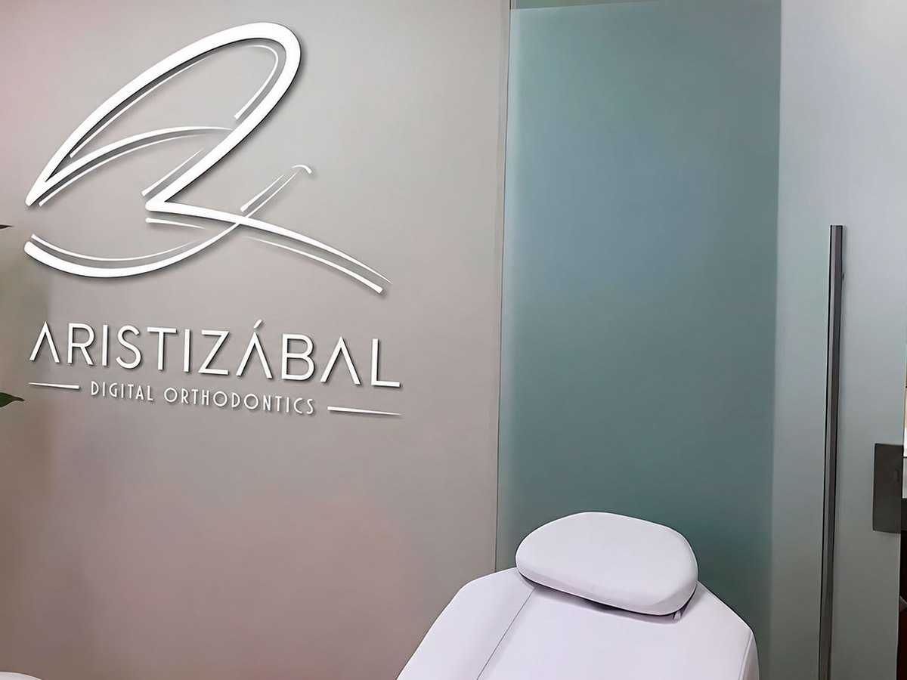
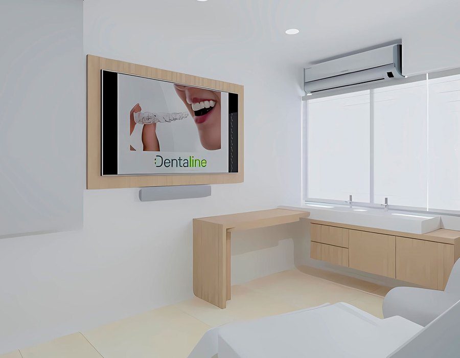
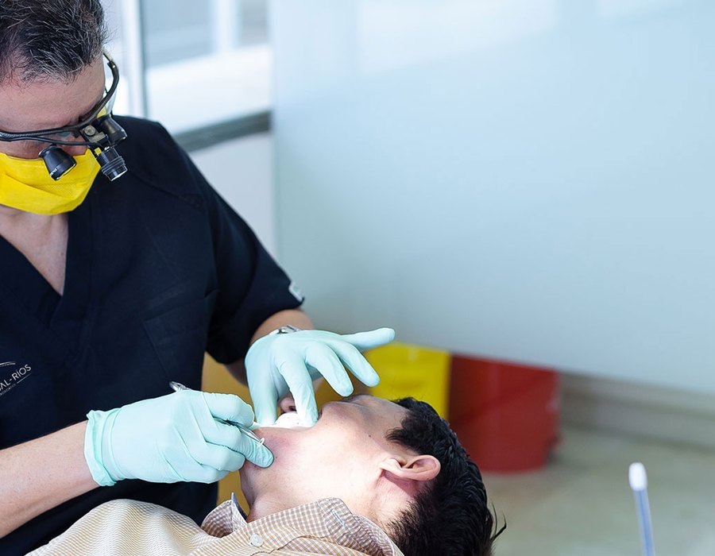
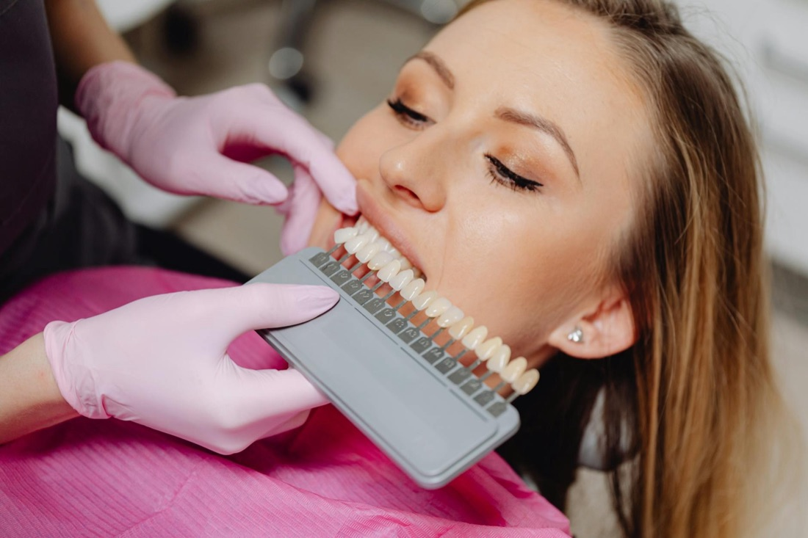
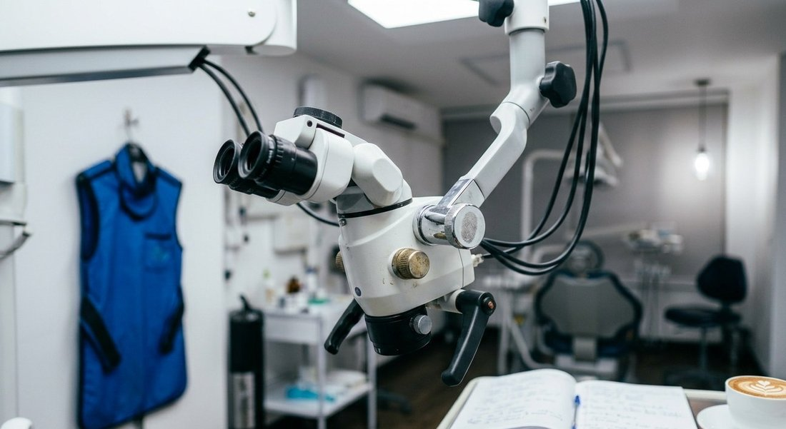
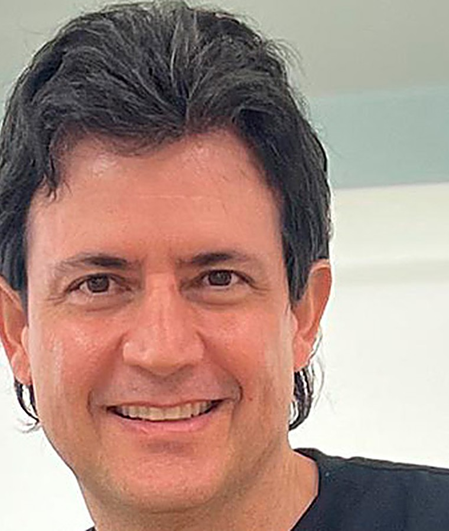

★★★★★
"Llevaba años con miedo al odontólogo. El Dr. Aristizábal me explicó cada paso del tratamiento de ortodoncia con paciencia. Hoy tengo mi sonrisa alineada y voy tranquila."

Carolina M.
Ortodoncia · 18 meses



Bajo la dirección del Dr. Juan Fernando Aristizábal, Director de Postgrado en Ortodoncia de la Universidad del Valle, en nuestra sede de Cali combinamos formación académica de alto nivel con ortodoncia digital de última generación.
Cuidamos tu salud y hacemos lo necesario para que cada visita sea cómoda, transparente y enfocada en resultados duraderos para tu sonrisa.
 [1] · Especialidad
[1] · Especialidad
 [2] · Especialidad
[2] · Especialidad
 [3] · Estética
[3] · Estética

[4] · Estética
[5] · Especialidad
Odontólogo y Ortodoncista con Especialización en Docencia. Director del Postgrado de Ortodoncia de la Universidad del Valle. Lidera en Cali un enfoque de ortodoncia digital centrado en diagnósticos precisos y resultados naturales.
Agendar cita"Llevaba años con miedo al odontólogo. El Dr. Aristizábal me explicó cada paso del tratamiento de ortodoncia con paciencia. Hoy tengo mi sonrisa alineada y voy tranquila."
"Siempre quise alinear mis dientes pero no quería brackets visibles. Con los alineadores invisibles del equipo del Dr. Aristizábal nadie notó que estaba en tratamiento. Resultado impecable."
"A mis 62 años pensé que era tarde para mejorar mi sonrisa. El equipo me hizo un diseño de sonrisa con blanqueamiento y carillas. Me siento 10 años más joven."

El dolor puede ceder momentáneamente, pero suele indicar un problema que sigue avanzando (caries, infección, fractura). Lo más seguro es agendar una valoración apenas notes molestia: detectar a tiempo evita tratamientos más invasivos.
La caries es la destrucción del esmalte y la dentina causada por bacterias que descomponen los restos de alimento y forman ácidos.
Se previene con cepillado tres veces al día, uso de seda dental, limpieza profesional cada 6 meses y reduciendo el consumo frecuente de azúcares y bebidas ácidas.
Un implante dental es una raíz artificial de titanio que reemplaza un diente perdido. Bien colocados y con higiene adecuada, los implantes pueden durar toda la vida. En Aristizábal planeamos cada cirugía con tomografía 3D antes de tocar al paciente.
Usamos anestesia local de última generación y, para procedimientos más complejos, sedación consciente supervisada. El 92% de nuestros pacientes reporta sentir nada o solo presión leve. Si tienes ansiedad dental, lo conversamos antes de cualquier procedimiento.
La primera valoración incluye examen, diagnóstico inicial y un plan de tratamiento con presupuesto por escrito, sin compromiso.
Aceptamos efectivo, tarjetas débito y crédito. Para los tratamientos más grandes manejamos facilidades de pago; pregúntanos por las opciones.
Estamos en Cali, en el Holguines Trade Center, Torre Farallones, Carrera 100 No. 11-60, Consultorio 505. Atendemos de lunes a viernes de 7:00 a 19:00 y sábados de 8:00 a 14:00.
Agenda tu valoración inicial. Recibirás un diagnóstico personalizado y un plan de tratamiento por escrito el mismo día.